AI Academy · Level 1 · Grade 6 · Week 35 · Student lesson
Improve One Cause
Learn to understand, design, build, test and explain AI systems responsibly.
Project: Helpful Classroom Sorter
Before you start
Week 33: retain failures and conditions in the test record.
Plan time to read, investigate and explain. Keep predictions separate from observations.
Student lesson · 1 of 14
Your mission
Your learning target
I can repair a located defect without changing the agreed requirements.
I can check the repaired case and earlier successful behaviour.
I can preserve versioned evidence and fix a candidate before final evaluation.
Remember before reading
Close your notes first. A rough first answer helps us choose the right starting point; it is not a score for your ability.
Without opening the old lesson, explain one key idea from Test Edge Cases and Fairness. Give an example and a mistake that the idea helps you avoid.
Without opening the old lesson, explain one key idea from Build a Paper Prototype. Give an example and a mistake that the idea helps you avoid.
Without opening the old lesson, explain one key idea from Find a Real Problem. Give an example and a mistake that the idea helps you avoid.
After trying, check the relevant lesson or ask your teacher. Change the part of your explanation that the evidence shows was wrong.
An improvement should target evidence from a failure, not random change.
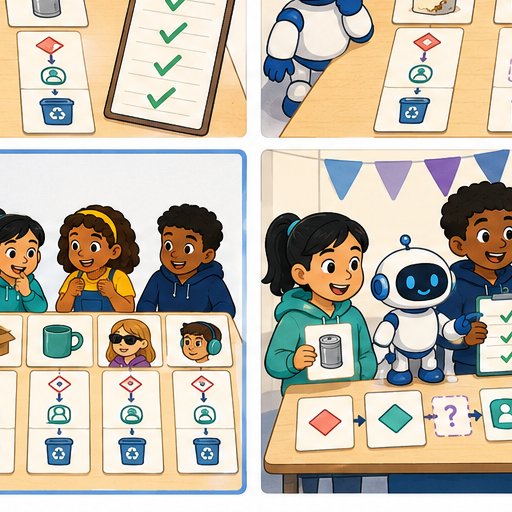
Learner name:
Readiness for the connected explanation
The faulty S comparison rejects an activity that takes exactly the available time. Which requirement does this break?
This week’s end goal
By the end, I can repair one identified cause and rerun cases that previously passed.
Student lesson · 2 of 14
Notice the evidence
PICTURE STORY
Look Closely Before You Explain
Pictures give clues; evidence tells us what the clues mean.

What do you notice?
Name three visible details without explaining them yet.
Circle the detail most connected to the system's decision.
Name one detail that may be decoration or distraction.
Make a first prediction and state the clue that supports it.
My observations, prediction, and evidence:
A closer explanation
Finding a failure is useful only if you can explain and check the repair. This week you will locate an incorrect comparison, change it in a labelled version, and test both the revealing case and behaviour that worked before. A repair can solve one problem while introducing another, so one newly passing example is not enough.
Keep catalogue B version 1 in order: B1 Bookmark drawing, 10 minutes, quiet Yes; B2 Story circle, 8 minutes, quiet No; B3 Pattern puzzle, 12 minutes, quiet Yes; B4 Tower challenge, 15 minutes, quiet No. These fictional values assume materials are available. Inputs are whole minutes from 0 to 30 inclusive and Quiet required Yes or No. No allows either quiet or nonquiet activities.
A candidate fits when its duration is no more than the available minutes AND either quiet is not required or the activity is quiet. Return the first fit with a correct reason. Valid input with no fit gives no match after all rows fail. Invalid or missing input needs clarification before search. Each new run starts with validation and a cleared output, then the first row if valid. Suggestions do not book or publish anything. These written rules are not a model fitted from examples.
Student lesson · 3 of 14
See how it works
VISUAL MECHANISM
Input → Process → Output
Follow the information instead of imagining magic inside the machine.
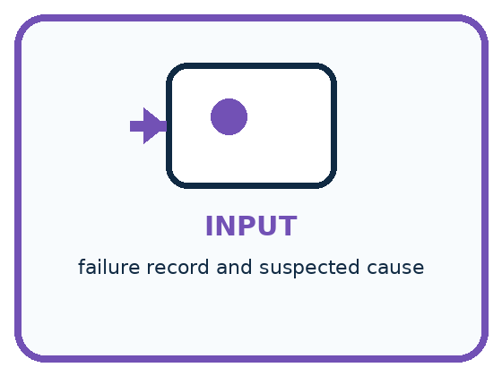
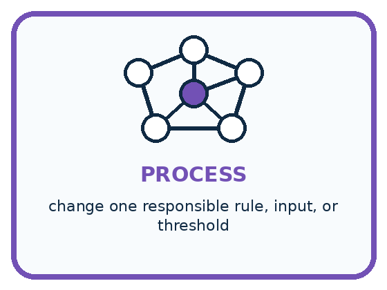
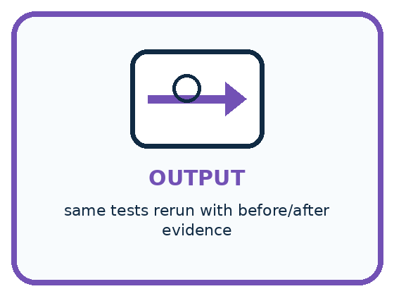
INPUT failure record and suspected cause
PROCESS change one responsible rule, input, or threshold
OUTPUT same tests rerun with before/after evidence
Draw a fresh example with all three stages:
A closer explanation
A repair with evidence
S version 0 follows the P1 process except that its time check uses strictly less than. On 10 Yes with catalogue B version 1, it reports no match. The expected result is B1 because 10 fits exactly and B1 is quiet. Compare the saved instruction with the trace: the cause is the exclusion of equality, not a need to change the catalogue or expected answer.
Create S version 1 by replacing only the time comparison with no more than. Keep validation, the quiet condition, catalogue order, advancement and stopping rules. Write a change record naming S0, S1, the failing 10 Yes case, the comparison changed and why equality belongs in the rule. Retain the old version and failed trace; do not overwrite them with the new result.
Connect the picture and the explanation
Point to the input, the deciding step and the result in this week’s visual. Explain the same step in ordinary words. A picture helps when you can say what each part represents.
Student lesson · 4 of 14
Compare the cases
PICTURE GALLERY
Four Cases, Four Clues
Use the visual cue, then read the evidence carefully.
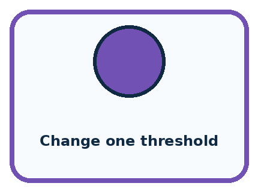
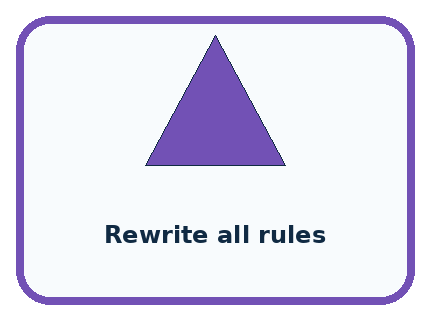
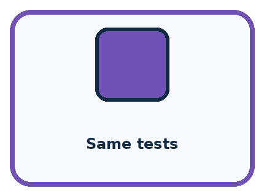
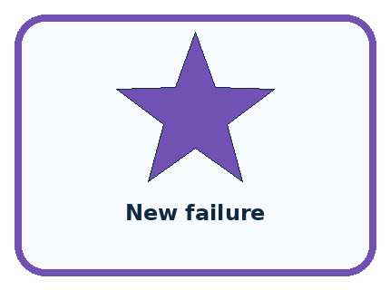
CASE 1 — Change one threshold Clue: targeted intervention. Meaning: interpretable.
CASE 2 — Rewrite all rules Clue: many causes changed. Meaning: weak evidence.
CASE 3 — Same tests Clue: before/after comparable. Meaning: stronger evidence.
CASE 4 — New failure Clue: old case now breaks. Meaning: regression.
Which two pictures are easiest to confuse? What evidence separates them?
Change one thing in the pictured case
Change: Use U2, which changes < to ≤ and keeps the quiet check.
Prediction: At 8 return A; at 6 return none.
Reason: Equality is repaired while B remains ineligible because it is noisy.
Student lesson · 5 of 14
Words that unlock the idea
VOCABULARY
Words You Can See and Use
The badge is a memory cue; the definition does the real thinking work.
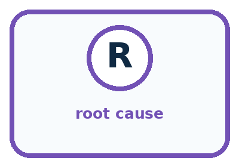
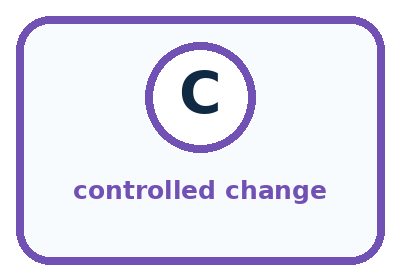
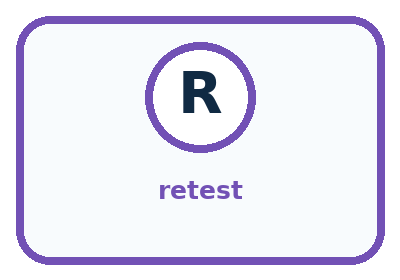
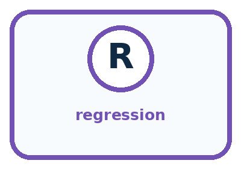
| Word | Meaning | My example |
|---|---|---|
| root cause | earliest responsible reason for a failure | |
| controlled change | one targeted modification while other factors stay fixed | |
| retest | repeat the same case after a change | |
| regression | previously working behavior that becomes worse |
Misconception detective
CLAIM TO REPAIR Any change after a failure counts as improvement.
Use one vocabulary word and one piece of evidence to repair it:
Words used in the closer explanation
| Word | Meaning |
|---|---|
| Defect | A fault in the instructions or implementation that can cause incorrect behaviour |
| Repair | A change intended to correct a located defect |
| Change record | A note of what changed, why, and which versions and tests support it |
| Fixed candidate | A saved version kept unchanged while a specified evaluation is run |
Student lesson · 6 of 14
Follow a worked example
WORKED EXAMPLE
Watch the Reasoning, Not Just the Answer
Every step connects a claim to observable evidence.

STEP 1 — OBSERVE failure record and suspected cause
STEP 2 — TRACE change one responsible rule, input, or threshold
STEP 3 — CONCLUDE same tests rerun with before/after evidence
What new evidence could change this answer?
A closer explanation
Consider a different proposed repair, T version 1. It accepts equal times but accidentally removes the quiet check. It fixes 10 Yes, yet now returns B2 for 9 Yes. That second request correctly returned no match under S0 because B2 is not quiet. Previously correct behaviour has become wrong: this is a regression.
| Case with catalogue B version 1 | Required result | Outputs from the stated instructions |
|---|---|---|
| 10 Yes; equality repair | B1 with a valid reason | S0 no match; T1 B1; S1 B1 |
| 9 Yes; quiet regression check | No match with a valid reason | S0 no match; T1 B2; S1 no match |
| 8 No; another equality case | B2 with a valid reason | S0 no match; T1 B2; S1 B2 |
| 6 No; exhaustion check | No match with a valid reason | S0 no match; T1 no match; S1 no match |
These outputs are worked predictions from the described versions. Your own test record must contain the actual runs and their reasons. T1 should not replace the candidate merely because it passes the first row. For S1, check the revealing equality cases and rerun all four routine cases from Week 33, then validation and the labelled catalogue variations from Week 34. A full pass still needs both the required output and a correct explanation.
Learn from the worked case
Cover the result before checking it. Say what is given, choose the procedure, and follow one step at a time. Then uncover the result and explain your first mismatch. Ask why a step is allowed, not only what number it produces.
A pictorial worked case: Improve One Cause
A fictional quiet-activity chooser has a boundary bug and a proposed repair.
The facts we will use
A: quiet Yes, 8 minutes; B: quiet No, 5 minutes. Request quiet required Yes.
U0 accepts only duration<available time. U1 fixes ≤ but accidentally removes the quiet requirement.

Read the picture one step at a time
Why this result follows
A repair must preserve the full contract, not just make one failing example pass. The quiet condition and duration comparison are separate requirements. Changing only the inequality targets the recorded cause; removing the quiet check changes another behavior. Save previously passing cases to reveal such regressions.
What this example does not establish
Two examples establish only these outcomes; further cases are needed before generalising the repair.
Student lesson · 7 of 14
Find and repair a mistake
COMPARE
Same Result, Different Reason
A comparison helps reveal the true concept boundary.
| Case | Evidence | What it shows |
|---|---|---|
| Change one threshold | targeted intervention | interpretable |
| Rewrite all rules | many causes changed | weak evidence |
| Same tests | before/after comparable | stronger evidence |
| New failure | old case now breaks | regression |
Repair two tempting claims
CLAIM A Any change after a failure counts as improvement.
Repair:
CLAIM B Retest only the failed case to save time.
Repair:
A closer explanation
If your own P1 already passes the development set, do not introduce a defect just to claim an improvement. Use the supplied S example to practise repair, and report that no change was needed in your saved version for the tested cases. If your version fails, retain the evidence, locate the cause and label the next repair. A new label alone does not prove a better version.
Save a candidate with its complete instructions, required catalogue data, input rules, change history and development results. State unresolved failures and limitations. Keep this version unchanged during the final evaluation. Do not inspect reserved final cases to decide which repair to make. If you revise after seeing final results, retain those results as belonging to the old version and treat the seen cases as development evidence; they are no longer an unseen evaluation for the revision.
Student lesson · 8 of 14
Practise together
GUIDED PRACTICE
Try It, Check It, Explain It
Use support now so you can succeed independently later.

Explain how the picture story demonstrates this idea: An improvement should target evidence from a failure, not random change.
Use a fresh example to explain root cause.
Trace a new input → process → output example.
Find and repair the error in: Retest only the failed case to save time.
Invent one edge case and name the safe response.
A closer explanation
Write expectations before running S1. Use B version 1 for 11 Yes, 9 No, 6 No and 9 Yes; include the revealing 10 Yes and 8 No. Add 0 Yes, 30 Yes, 31 Yes, blank minutes with Yes, 10.5 Yes and 10 Maybe to check valid endpoints and invalid fields. Keep cases and results separated by version, and compare with the manual baseline under the same conditions.
Retain the catalogue variation tests: B version 2 changes only B1 time to 20, giving B3 for 12 Yes. B version 3 has times 20, 18, 17 and 15 for B1 to B4, with the original quiet labels and order; it gives B4 for 15 No and no match for 15 Yes. These cases check later successful paths and the quiet condition under changed data. Label each test with the catalogue it actually uses.
Practise with less help: Check the repair and earlier behaviour
Use workbook W2 for the connected example “Improving and checking regressions”. First fill the input and rule boxes. Try the middle steps before asking for a hint. After a hint, try the next step yourself.
| Plan | Do | Check |
|---|---|---|
| What is given? Which rule or procedure applies? | Record each intermediate step. | Does the result follow? What remains unknown? |
Explain your trace to a partner. Your partner points to one step to check. Swap roles on the next case. Each person writes their own explanation.
Check your reasoning
Use the worked case for Improving and checking regressions. Proposed explanation: “One repaired example proves improvement everywhere”. Decide whether this explanation is supported. Point to the step or supplied fact that decides; explain your repair if needed.
Answer on your own before discussion. If you are unsure, say which step you need help with.
Explain the picture
Explain why “our repaired version now picks something” is not enough to show success at 6.
This is supported practice. Keep the separately named independent case for an attempt before feedback.
Student lesson · 9 of 14
Run the investigation
EXPLORER LAB
One-Cause Improvement Cycle
Predict first, test honestly, and explain what the evidence means.

State your prediction before the result is known.
Complete the task: Revise one rule or input and rerun the same tests.
Keep a normal case and an edge case clearly separated.
Record what happened—even when it does not match your prediction.
Explain the result, one limitation, and the next useful test.
| Case | Prediction | Observed result | What it means |
|---|---|---|---|
| Normal | |||
| Edge |
Plan → try → check
Before trying: what do I expect, and why? While trying: which step could first go wrong? Afterwards: what did I actually observe, and what should change? Keep “not run” if you only traced the procedure.
Student lesson · 10 of 14
Build your understanding
PRACTICE LADDER
Climb from Recall to Defense
Each step asks for a stronger kind of understanding.

RECALL Define root cause.
EXPLAIN An improvement should target evidence from a failure, not random change.
TRACE Show the input, process, and output.
DIAGNOSE Repair: Any change after a failure counts as improvement.
TRANSFER Apply the idea to a new home or classroom case.
CREATE Design one revealing test.
DEFEND Give a claim, evidence, mechanism, limit, and safe action.
Student lesson · 11 of 14
Connect your project
PROJECT
Helpful Classroom Sorter
Build one coherent system across the year, one evidence-based decision at a time.

What real classroom need does this serve?
What information is necessary—and what should stay private?
What happens inside the process?
What normal and edge cases will you test?
When should it say not sure or ask a person?

My project decision:
Evidence for your project
Maintain sorter regression tests and compare complete version traces, retaining new failures rather than hiding them.
Student lesson · 12 of 14
Show what you know
MASTERY
Fresh-Case Independent Proof
Complete this after teaching and guided practice have ended.

□ Name or draw the fresh case.
□ Trace input, process, and output.
□ State the conclusion and strongest evidence.
□ Name one limit, failure, missing clue, or fairness/privacy concern.
□ Explain one safe next action or improvement.
Independent evidence:
My level: □ Not yet □ With one hint □ Independently □ I can teach it
Student lesson · 13 of 14
Study a complete case
Week 35 Worked case
Use the supplied details to practise the weekly concept before attempting the independent question. This case extends the illustrated lesson.
The situation
The team changes lighting, labels and rules together; errors fall from four to one.
The question
Can it identify the cause of improvement?
Worked explanation
No. Several factors changed. Compare one planned change at a time with controlled conditions.
Explain it in your own words
Which detail supports the answer, and why does it matter?
Trace the supplied case visually
A fair comparison changes one cause
| Evidence or stage | Value or result |
|---|---|
| Before | Four errors under recorded conditions |
| Confounded revision | Lighting, labels and rules all changed |
| Controlled revision | Change one planned factor and retest |
The team changes lighting, labels and rules together; errors fall from four to one.
Can it identify the cause of improvement?
No. Several factors changed. Compare one planned change at a time with controlled conditions.
Student lesson · 14 of 14
Try a new case independently
Independent case: Audit a different proposed repair
Equipment catalogue E lists E1 first with capacity 4 and E2 second with capacity 8. Valid whole group sizes are 1 to 10. Choose the first capacity at least the group size, or no match; invalid input needs clarification. Old U0 uses strictly greater capacity and stops at the first fit. Proposed U1 includes equality but keeps searching and returns the last fit. Independently compare U0, U1 and the requirement for groups 8 and 3. Identify the repair and regression, propose U2 and give one validation check. No booking occurs.
Attempt this case before feedback. Record any help. Earlier examples below are further practice; a case already practised with feedback cannot establish fresh transfer.
Week 35 Independent application
Close the worked explanation. Apply the idea to this different question without copying.
Dim photos fail. You change the lighting and all decision rules together; performance improves. Can you tell which change helped? Design a clearer comparison.
My answer, with a trace, calculation or supporting evidence
Create and test
Change one relevant detail. Predict the result before testing. Include a boundary or missing-information case when it helps reveal a limit.
My changed input and expected result
Connect to your project
Create sorter version 2 with one evidence-linked change and a before/after test table.
The evidence I will keep
Your teacher has the independent answer and scoring criteria. Complete the matching workbook week to keep your practice evidence together.
Transfer practice from the original programme
Version A makes four errors. Version B makes one after lighting, labels and rules all change. What can you conclude, and how would you isolate the effect of lighting?
Use feedback to improve
Attempt the independent case before hints. Record whether you worked alone, used a hint or followed a model. After feedback, fix the first unsupported step and explain why it changed. A later check uses a changed case, not a copied answer.